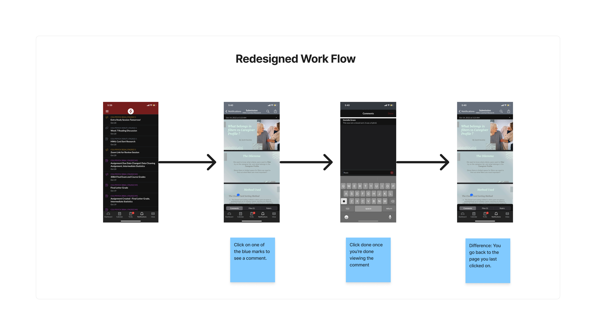
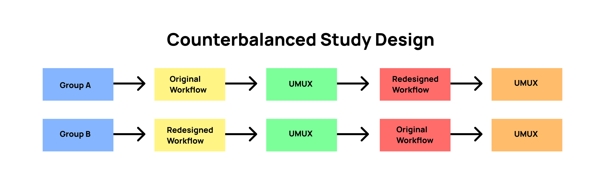

Canvas Usability Study
The Canvas app is a course management system that allows students to check their grades and track homework assignments. One feature of the app allows users to view comments made on homework assignments.
THE PROBLEM
The comments feature on the homework assignment is lacking a more streamlined approach. It forces the user to consistently click back and forth on multiple pages to view one comment at a time. This can cause confusion or frustration for the user who is looking to see the comments made.
RESEARCH QUESTIONS
I conducted a usability test that will evaluate using the summative methods to compare the task on time of the redesigned workflow to the original workflow.
THE PROCESS
Question 1: Is there a significant difference in Time on Task between the redesign and the original design?
Question 2: Is there a significant difference in Usability Scores between the redesign and the original design?
SAMPLING METHOD
Convenience sampling, by using any acquaintances that are available to me.
DESIGN
Once the subject consents they will complete a questionnaire that involves demographics and experience with the canvas app on Qualtrics. They will then be randomized by sequence to assure the study is counterbalanced. The subject will either do the old design and then the redesign or vice versa through Figma. They will complete a timed and recorded task of reviewing 3 annotations/comments on the homework page. Once the timed and recorded task is completed they will complete a different design. In the end, they will be debriefed with a question if they had a preference between the two workflows and why. The study will be done remotely through Zoom and screen recorded.
A recording of one of the design workflows participants completed on Figma.
ANALYSIS
Hypothesis 1: I ran a within-subjects t-test using a t (Log) Confidence Interval for the time comparison.
Hypothesis 2: I ran a within-subjects t-test on the UMUX.
OUTCOME
With the 7 participants obtained, there was a significant (p= .007, p < .05) decrease in task on time from the Original (M= 174 sec) to Redesign (M= 34 sec) workflows. The Confidence level of the difference in seconds is 93.9 to 180.4.
No difference was found (p= .43, p> .05) in the UMUX usability scores. The reasoning for this can be from a limitation of my measures not taking into account “good participant bias” from convenience sampling or just no actual difference in usability.
RECOMMENDATIONS
I recommend implementing the Redesign as there was a significant reduction of time. The important changes highlighted in the redesigned work flow at the top showed that by increasing the blue icon size allowed for participants to find the comments faster. Another change that decreased task time was taking out the comment page from the workflow so it allowed users to view multiple comments and gave the participants the option to swipe up and view the comment page.